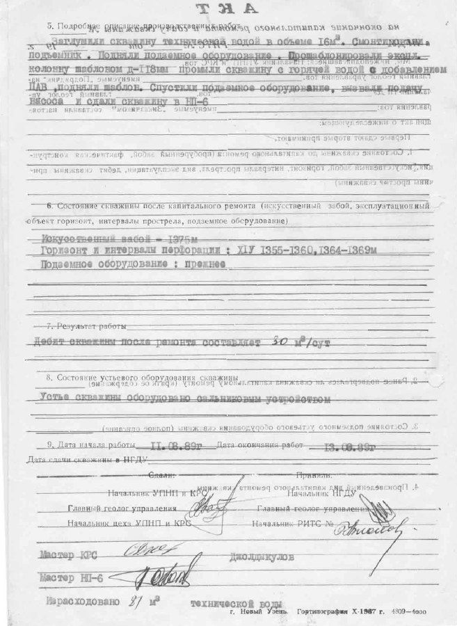
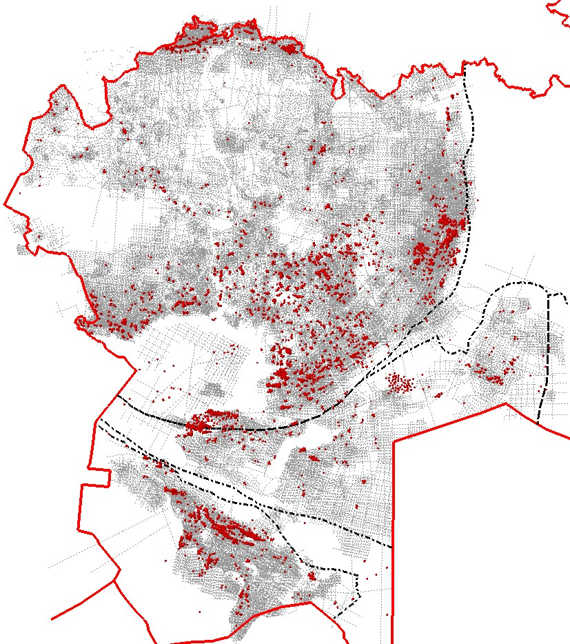
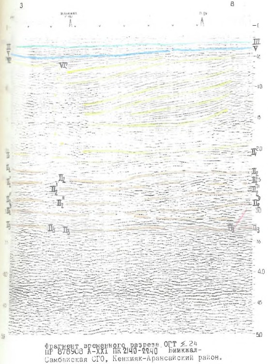
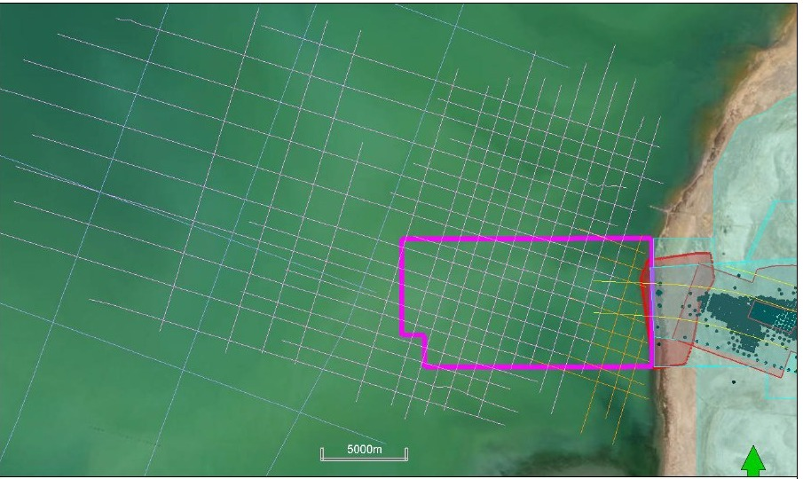
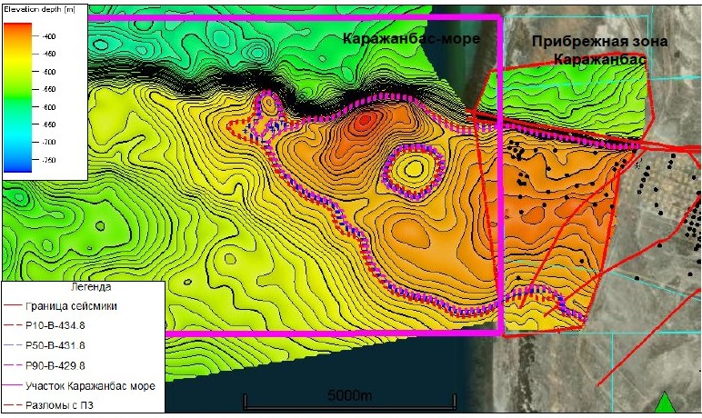
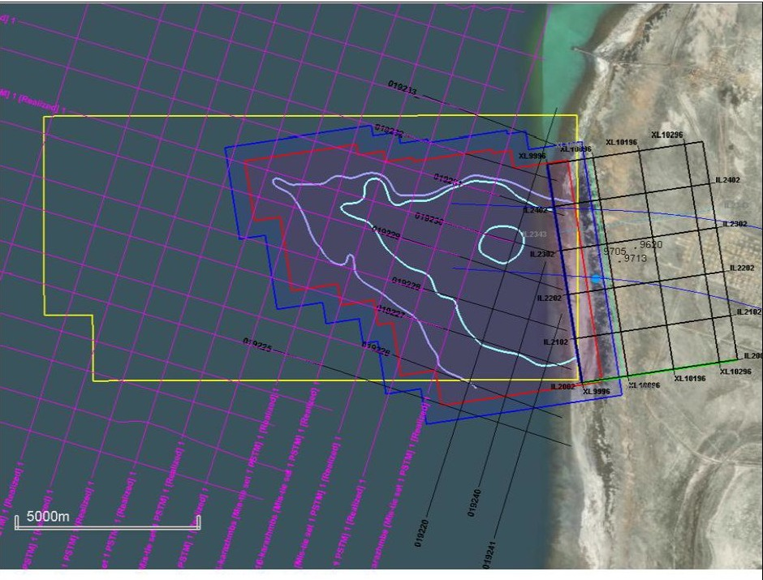
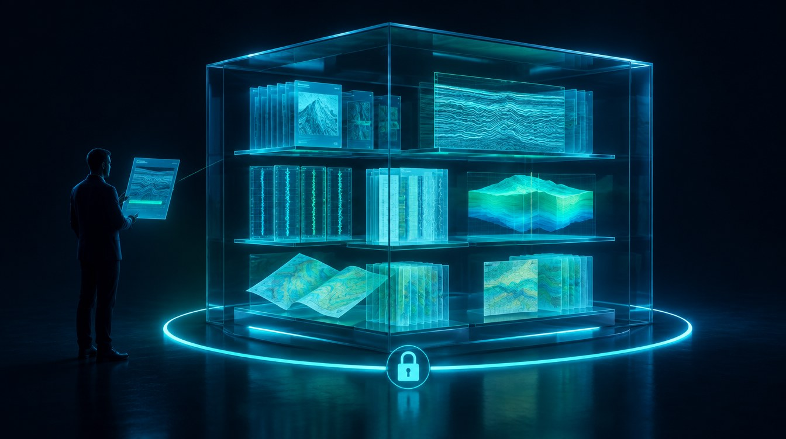

KMG Geo AI — ИИ-ассистент геолога
Хранилище КМГ — 7,8 ТБ и 2 млн файлов: задача уже не найти информацию, а быстро использовать её для геологических решений. Разработан геологами и IT-командой KMG Digital — отечественный продукт: данные, геологические модели и ИИ в одном инструменте поддержки решений.
- Анализирует большие массивы геологических материалов
- Сопоставляет данные разных лет и источников
- Находит аналоги по изученным объектам и участкам
- Оценивает риски — основу для геологического решения
Разрозненные данные советского периода — в структурированную основу за минуты



Каражанбас: продолжение структуры в море



Исторические 2D-профили Каражанбас море (часть — низкого качества), 3D-съёмка 2024 г. в Прибрежной зоне на 19 км², МОГТ 2D 2024 г. — 8 профилей, 119,85 пог. км. Между прибрежной частью и Каражанбас море — участок, не охваченный сейсмикой.
По 3D-съёмке 2024–2025 гг. построена геологическая модель Прибрежной зоны, пробурено 25 скважин с промышленными притоками, ожидаемый прирост запасов — 4 307 тыс. т. Интерпретация показывает продолжение продуктивных пластов на запад, в море: ресурсы Каражанбас море по Р50 — 28,5 млн т.
3D-сейсморазведка на 63 км²: шаг ПВ и ПП 25 м, полнократная площадь 47 км², кратность 200 — чтобы подтвердить перспективность продолжения структуры.
Виртуальный Data Room — защищённая комната данных для инвесторов

Сегодняподготовка материалов для партнёров
- Геологоразведка — инвестиции в условиях высокой неопределённости; для разделения рисков КМГ привлекает партнёров
- Материалы для каждого нового партнёра собирают специалисты вручную — из разных систем и архивов
Data Roomвиртуальная комната данных на базе KMG Geo AI
- Партнёр получает структурированный и защищённый доступ к материалам проекта — в закрытом контуре
- Ассистент отвечает на типовые вопросы со ссылками на документы; специалисты КМГ — только на содержательные
Машинное обучение на сейсморазведочных данных
Что это даёт на практике
- Контроль качества и безопасность: не «чёрный ящик» — каждый тезис даётся со ссылкой на конкретный документ и страницу
- Ответственность и финальная подпись — всегда на геологе: human in the loop, контроль за человеком
- 100 % информационная безопасность: закрытый контур, GPU «Казахтелекома»
- Интеграция модуля в Data Room для потенциальных партнёров и инвесторов
- Подключение ML-алгоритмов к сейсмике 2D/3D для экспресс-выделения перспективных структур
- Опробование системы на текущих лицензионных участках